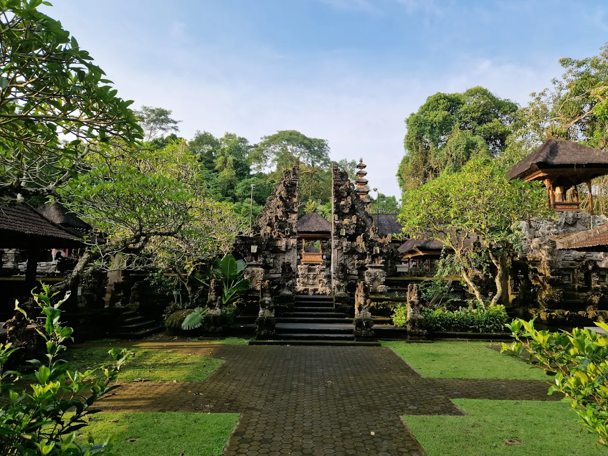
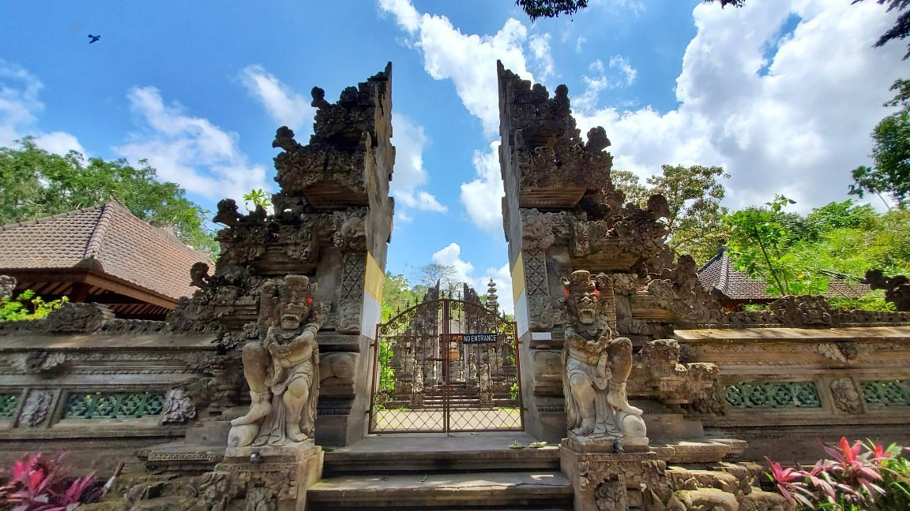

Lokasi Strategis di Jantung Bali
Ubud terletak di Kabupaten Gianyar, sekitar 30 kilometer utara dari Denpasar, ibu kota Provinsi Bali. Posisi geografisnya yang unik menempatkan Ubud di dataran tinggi tengah pulau, pada ketinggian rata-rata 600 meter di atas permukaan laut. Lokasi strategis ini menjadikan Ubud sebagai jantung geografis dan spiritual Bali yang sejuk dan subur.
Wilayah Ubud dikelilingi oleh desa-desa tradisional yang masih mempertahankan kearifan lokal dan arsitektur khas Bali. Berbatasan dengan hutan tropis yang lebat di bagian utara dan lembah sungai yang subur di tengahnya, Ubud menawarkan panorama alam yang beragam dan menakjubkan dalam radius yang relatif kecil.
Akses menuju Ubud cukup mudah dari berbagai penjuru pulau. Dari Bandara Internasional Ngurah Rai, perjalanan memakan waktu sekitar satu hingga satu setengah jam melalui jalan raya yang berliku namun memanjakan mata dengan pemandangan sawah, desa, dan perbukitan hijau yang menghijau sepanjang tahun.

Topografi Lembah dan Perbukitan
Topografi Ubud didominasi oleh perbukitan landai dan lembah-lembah sungai yang dalam, menciptakan kontur tanah yang dramatis dan lanskap yang sangat fotogenik.

Lembah-lembah ini tidak hanya memberikan keindahan visual, tetapi juga memainkan peran penting dalam sistem irigasi tradisional subak yang telah diakui UNESCO sebagai Warisan Budaya Dunia. Air mengalir dari pegunungan di utara melalui saluran-saluran yang dikelola secara komunal, mengairi sawah-sawah terasering yang menjadi ikon lanskap Ubud.


Perbukitan di sekitar Ubud menawarkan berbagai jalur trekking yang populer di kalangan wisatawan dan penduduk lokal. Campuhan Ridge Walk adalah salah satu yang paling terkenal, menawarkan pemandangan 360 derajat ke lembah hijau, sawah bertingkat, dan hutan tropis yang masih asri. Jalur ini mudah diakses namun tetap memberikan pengalaman alami yang autentik.